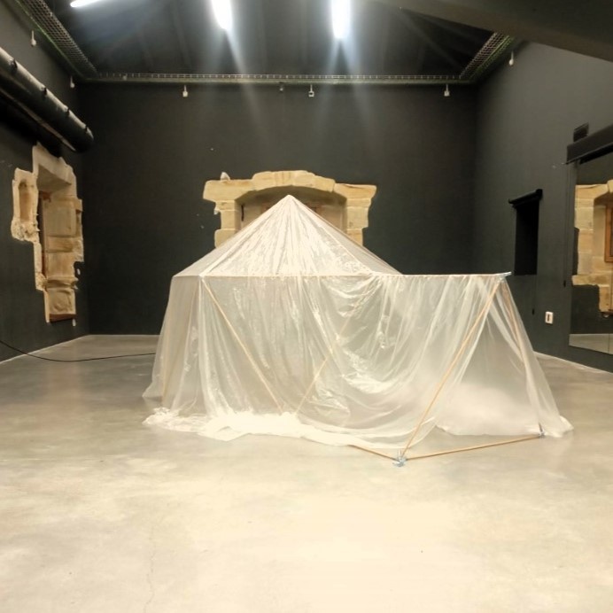

Consultar
Domiko pertenece a la colección Lógica Recíproca, una línea de kits de construcción en madera natural inspirada en la geometría, la arquitectura y el juego libre.
Fabricado en madera de haya y conectores de acero y pvc, está compuesto por 31 palos de 1 m y 14 conectores, que al ensamblarse forman un icosaedro completo: una figura de veinte caras triangulares que enseña los principios de equilibrio y simetría de manera tangible.
Al retirar una de sus caras pentagonales, la estructura puede asentarse como una cúpula o refugio, y los palos retirados se convierten en pieza de entrada o repuesto. En su versión abierta, permite construir tetraedros, pirámides, octaedros y otras formas libres.
Pensado para talleres, escuelas y familias, Domiko transforma la geometría en una experiencia sensorial y colectiva: una construcción que se levanta con las manos y se entiende con el cuerpo.
Un material vivo, versátil y evolutivo. Domiko acompaña el crecimiento a lo largo de muchas etapas del juego, desde el descubrimiento sensorial hasta la exploración simbólica y el pensamiento matemático.
Domiko puede convertirse en un pequeño universo de estímulos. Cuelga de su estructura elementos sonoros o móviles naturales: cintas, campanas, conchas o piezas de madera. Al pasar gateando, los bebés los tocarán, los harán sonar, observarán las sombras y disfrutarán del movimiento.
Aparece el deseo de refugio y escondite. Coloca telas por encima, crea ventanas y puertas. La estructura se transforma en cabaña, casa o guarida, un espacio propio donde entrar, salir y mirar el exterior desde dentro.
Domiko se convierte en escenario, casa, barco o laboratorio, según el día. A través de este juego simbólico los niños ensayan roles, expresan emociones y exploran la arquitectura como extensión del cuerpo y del pensamiento.
¿Qué mejor forma de comprender el espacio que construyendo un icosaedro gigante? Con Domiko, los niños pueden ver, medir y habitar la geometría. La noción de volumen, proporción y estructura deja de ser abstracta para volverse tangible.
Desde unos 5 años en adelante. Es adecuado para talleres, escuelas y familias, y funciona muy bien en espacios intergeneracionales.
Con 31 palos de 1 m, 31 palos cortos para maqueta, 14 conectores y una bolsa de almacenaje.
No. Todo se ensambla a mano mediante conectores, sin tornillos ni adhesivos. La construcción se desmonta y se vuelve a armar fácilmente.
Los kits se producen de forma artesanal en el taller de Coloniales. Escríbenos por WhatsApp para informarte de disponibilidad y precios.
Si tienes dudas sobre el kit, cómo funciona o quieres saber más, escríbenos por WhatsApp.